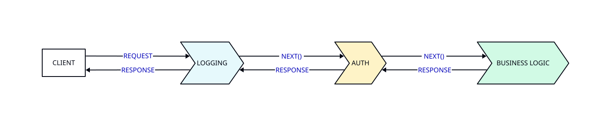

http.Handler را دریافت کرده و یک http.Handler جدید برمیگردانند. این رویکرد سادهتر اما قدرتمندتر است.مدیریت Middleware
| ویژگی | Laravel Middleware | Go Middleware |
|---|---|---|
| تعریف | کلاس PHP با متد handle() | تابع func(http.Handler)http.Handler |
| ثبت سراسری | Kernel.php → $middleware | chainMiddleware(mux, mw1, mw2) |
| ثبت در مسیر | Route::middleware('auth') | پوشش هندلر با middleware(handler) |
| ترتیب اجرا | به ترتیب ثبت در آرایه | معکوس حلقه — آخرین اول اجرا |
| گروهبندی | Middleware Groups در Kernel | ترکیب دستی توابع |
| قبل و بعد | قبل: $next($request) / بعد: تغییر response | قبل: next.ServeHTTP() / بعد: تغییر response |

در ساختار یک وبسرور، معمولاً نیازمند اضافه کردن قابلیتهای جانبی مانند Logging، کنترل دسترسی، مدیریت خطا، افزودن هدرهای امنیتی و بسیاری موارد دیگر هستیم که نباید در تکتک Handler برنامه تکرار شوند. اینجا نقش Middleware مطرح میشود.
Middleware در Go به قطعات کدی گفته میشود که بین دریافت Request و اجرای هندلر اصلی قرار میگیرند و قابلیتهای کمکی را به شکل متمرکز و سازماندهی شده فراهم میکنند. استفاده از Middleware ضمن افزایش قابلیت نگهداری کد، امنیت و قابلیت توسعه پروژه را به شکل قابلتوجهی افزایش میدهد.
7.4.1 تعریف Middleware در Go
میدلور HTTP را بهعنوان توابع ساده بنویسید که یک http.Handler دریافت میکنند و یک http.Handler برمیگردانند. این الگو بسیار زیباست زیرا بهطور طبیعی ترکیبپذیر است — میتوانید میدلورها را بدون هیچ جادوی فریمورک زنجیره کنید و سیستم نوعی صحت را تضمین میکند.
نویسنده و سخنران برجسته Go | How I Write HTTP Services in Go
Middleware در Go معمولاً به صورت تابعی نوشته میشود که یک http.Handler میگیرد و یک http.Handler جدید بازمیگرداند. یعنی در واقع میتواند قبل و بعد از اجرای هندلر اصلی، پردازشهایی انجام دهد.
ساختار کلی یک Middleware به شکل زیر است:
func middlewareName(next http.Handler) http.Handler {
return http.HandlerFunc(func(w http.ResponseWriter, r *http.Request) {
next.ServeHTTP(w, r) // call next handler in chain
})
}
کارهای قبل از اجرای هندلر اصلی و کارهای بعد از اجرای هندلر اصلی (اختیاری):
7.4.2 مزایای استفاده از Middleware
افزایش خوانایی و نظم کد ویژگیهای عمومی و مشترک را به صورت جداگانه مدیریت میکند.
کاهش تکرار کد کدهای مشابه مثل Logging یا بررسی اعتبارسنجی فقط یک بار نوشته میشود.
امنیت بیشتر امکان کنترل دسترسی و جلوگیری از حملات از طریق یک لایه میانی فراهم میشود.
قابلیت مدیریت خطا میتوان به صورت مرکزی از وقوع Panic یا خطاهای بحرانی جلوگیری کرد.
سفارشیسازی پاسخها تنظیم هدرها و اعمال محدودیتها بدون تغییر هندلرهای اصلی.
طراحی متعامد یعنی تغییرات یک مؤلفه روی مؤلفههای دیگر اثر نمیگذارد. هرچه سیستم شما متعامدتر باشد، چیزهای کمتری را هنگام تغییر یک قابلیت باید تغییر دهید.
نویسندگان و مهندسان نرمافزار | The Pragmatic Programmer
7.4.3 پیادهسازی Middleware روی ServeMux
در برنامههای Go معمولاً از http.ServeMux برای مدیریت روتها استفاده میشود. چون ServeMux یک http.Handler است میتوان آن را به عنوان ورودی به Middleware داد و Middleware را روی کل سرور اعمال کرد.
نمونه ساده با Middleware Logging:
func loggingMiddleware(next http.Handler) http.Handler {
return http.HandlerFunc(func(w http.ResponseWriter, r *http.Request) {
log.Printf("شروع درخواست: %s %s", r.Method, r.URL.Path)
next.ServeHTTP(w, r)
log.Printf("پایان درخواست: %s %s", r.Method, r.URL.Path)
})
}
func main() {
mux := http.NewServeMux()
mux.HandleFunc("/", homeHandler)
mux.HandleFunc("/about", aboutHandler)
mux.HandleFunc("/favicon.ico", http.NotFound)
loggedMux := loggingMiddleware(mux)
server := &http.Server{
Addr: ":8080",
Handler: loggedMux,
}
log.Fatal(server.ListenAndServe())
}
7.4.4 Middleware Chaining
در پروژههای واقعی معمولاً چندین Middleware داریم. ترتیب اجرای آنها اهمیت بالایی دارد. برای راحتی میتوان یک تابع کمکی برای زنجیره Middlewareها نوشت:
type Middleware func(http.Handler) http.Handler
func chainMiddleware(h http.Handler, mws ...Middleware) http.Handler {
for i := len(mws) - 1; i >= 0; i-- {
h = mws[i](h)
}
return h
}
handlerChain := chainMiddleware(mux, recoverMiddleware, securityHeadersMiddleware, loggingMiddleware, corsMiddleware)
و سپس در main به این صورت استفاده میکنیم:
7.4.5 الگوی Closure و Adapter در Middleware
برای درک عمیقتر middleware در Go، باید دو مفهوم کلیدی را بشناسیم: Closure (بستار) و http.HandlerFunc به عنوان Adapter (تطبیقدهنده).
نقش Closure
وقتی تابع middleware را مینویسیم، یک closure ایجاد میکنیم. این closure به متغیر next (هندلر بعدی) دسترسی دارد و آن را در خود «حبس» میکند. به این ترتیب، وقتی ServeHTTP فراخوانی میشود، middleware همچنان به هندلر بعدی دسترسی دارد:
func myMiddleware(next http.Handler) http.Handler {
// closure: inner function has access to next variable
return http.HandlerFunc(func(w http.ResponseWriter, r *http.Request) {
// --- Before handler ---
log.Println("درخواست دریافت شد:", r.URL.Path)
// Call next handler
next.ServeHTTP(w, r)
// --- After handler ---
log.Println("پاسخ ارسال شد")
})
}
نقش http.HandlerFunc به عنوان Adapter
در Go رابط http.Handler دارای متد ServeHTTP(ResponseWriter, *Request) است. اما func(w ResponseWriter, r *Request) صرفاً یک تابع است و رابط http.Handler را برآورده نمیکند. اینجاست که http.HandlerFunc نقش adapter را بازی میکند:
// http.HandlerFunc is a type that any function with matching signature
// Automatically converts to http.Handler
type HandlerFunc func(ResponseWriter, *Request)
// ServeHTTP satisfies the Handler interface method
func (f HandlerFunc) ServeHTTP(w ResponseWriter, r *Request) {
f(w, r) // just calls the function
}
بدون http.HandlerFunc نمیتوانستیم یک تابع ناشناس را مستقیماً به عنوان http.Handler برگردانیم. این adapter پل بین «توابع معمولی» و «رابط Handler» است.
// Laravel Middleware — PSR-15
class MyMiddleware implements MiddlewareInterface
{
public function process(Request $request, Handler $handler): Response
{
// Before handler
Log::info('Request received');
// Call next handler
$response = $handler->handle($request);
// After handler
Log::info('Response sent');
return $response;
}
}
| مفهوم | Laravel / PSR-15 | Go net/http |
|---|---|---|
| رابط Middleware | MiddlewareInterface با متد process() | func(http.Handler) http.Handler |
| نوع درخواست | PSR-7 ServerRequestInterface | *http.Request (ساختار ثابت) |
| نوع پاسخ | PSR-7 ResponseInterface | http.ResponseWriter (واسط) |
| فراخوانی بعدی | $handler->handle($request) | next.ServeHTTP(w, r) |
| تغییر درخواست | ایجاد شیء جدید Request | تغییر مستقیم *http.Request یا r.WithContext() |
| تغییر پاسخ | ایجاد شیء جدید Response | بستهبندی ResponseWriter |
7.4.6 پیادهسازی Middlewareهای عملی
Middleware هدرهای امنیتی
یکی از middlewareهای کلیدی، افزودن هدرهای امنیتی به تمام پاسخهاست. این هدرها از حملات رایج مانند Clickjacking، XSS و MIME-type sniffing جلوگیری میکنند:
func commonHeaders(next http.Handler) http.Handler {
return http.HandlerFunc(func(w http.ResponseWriter, r *http.Request) {
w.Header().Set("Content-Security-Policy",
"default-src 'self'; style-src 'self' 'unsafe-inline'; img-src 'self' data:")
w.Header().Set("Referrer-Policy", "origin-when-cross-origin")
w.Header().Set("X-Content-Type-Options", "nosniff")
w.Header().Set("X-Frame-Options", "deny")
w.Header().Set("X-XSS-Protection", "0") // modern browsers don't use this
w.Header().Set("Strict-Transport-Security", "max-age=63072000; includeSubDomains")
next.ServeHTTP(w, r)
})
}
// Laravel — in app/Http/Middleware/SetSecureHeaders.php
class SetSecureHeaders
{
public function handle($request, Closure $next)
{
$response = $next($request);
$response->headers->set('X-Frame-Options', 'DENY');
$response->headers->set('X-Content-Type-Options', 'nosniff');
$response->headers->set('Strict-Transport-Security', 'max-age=63072000; includeSubDomains');
return $response;
}
}
Middleware لاگ درخواست
برای ثبت جزئیات هر درخواست (متد، مسیر، کد وضعیت و مدت زمان)، باید http.ResponseWriter را بستهبندی کنیم تا بتوانیم کد وضعیت را ضبط کنیم:
type responseRecorder struct {
http.ResponseWriter
statusCode int
}
func (rr *responseRecorder) WriteHeader(code int) {
rr.statusCode = code
rr.ResponseWriter.WriteHeader(code)
}
func requestLogger(next http.Handler) http.Handler {
return http.HandlerFunc(func(w http.ResponseWriter, r *http.Request) {
start := time.Now()
rec := &responseRecorder{ResponseWriter: w, statusCode: http.StatusOK}
next.ServeHTTP(rec, r)
log.Printf("%s %s %d %s",
r.Method,
r.URL.Path,
rec.statusCode,
time.Since(start).Round(time.Microsecond),
)
})
}
http.ResponseWriter الگوی رایجی در Go است. با ایجاد ساختاری که http.ResponseWriter را embed میکند، میتوانیم رفتار آن را بدون تغییر رابط اصلی، گسترش دهیم.
Middleware بازیابی از Panic
اگر در هندلری panic رخ دهد، کل سرور از کار نمیافتد (Go 1.22+)، اما کاربر خطای زشتی میبیند. این middleware خطاهای panic را شکار کرده و پاسخ 500 مناسب برمیگرداند:
func recoverPanic(next http.Handler) http.Handler {
return http.HandlerFunc(func(w http.ResponseWriter, r *http.Request) {
defer func() {
if err := recover(); err != nil {
log.Printf("panic بازیابی شد: %v", err)
w.Header().Set("Connection", "close")
http.Error(w, "خطای داخلی سرور", http.StatusInternalServerError)
}
}()
next.ServeHTTP(w, r)
})
}
تنظیم هدر Connection: close بسیار مهم است. وقتی panic رخ میدهد، ارتباط HTTP ممکن است در وضعیت ناقص باشد و تنظیم این هدر به مرورگر میفهماند که باید ارتباط را ببندد.
// Laravel — error handling in Exception Handler
// app/Exceptions/Handler.php
public function render($request, Throwable $exception)
{
if ($exception instanceof \Error) {
Log::error('Fatal error: ' . $exception->getMessage());
return response()->view('errors.500', [], 500);
}
return parent::render($request, $exception);
}
7.4.7 موقعیت Middleware و دامنه اعمال
یکی از نکات مهم در طراحی middleware، مکان قرارگیری آن در زنجیره است. اگر middleware را قبل از ServeMux قرار دهید، روی تمام مسیرها اعمال میشود. اما اگر آن را بعد از ServeMux و روی یک هندلر خاص قرار دهید، فقط همان مسیر تحت تأثیر قرار میگیرد:
mux := http.NewServeMux()
// First register the routes
mux.HandleFunc("/", homeHandler)
mux.HandleFunc("/admin", adminHandler)
mux.HandleFunc("/public", publicHandler)
// Method 1: middleware before mux → on all routes
// All requests go through middleware
handler := requestLogger(commonHeaders(mux))
// Method 2: middleware only on specific route
// Only /admin goes through authMiddleware
mux.Handle("/admin", authMiddleware(http.HandlerFunc(adminHandler)))
mux.HandleFunc("/public", publicHandler) // without auth
// Finally start server with global chain
server := &http.Server{Handler: handler}
flowchart TB
subgraph M1["روش ۱: Middleware سراسری (قبل از mux)"]
direction LR
R1["Request"] --> CH1["commonHeaders"]
CH1 --> RL["requestLogger"]
RL --> SM1["ServeMux"]
SM1 --> P1A["/"]
SM1 --> P1B["/admin"]
SM1 --> P1C["/public"]
N1(["همه مسیرها هدر امنیتی و لاگ دارند"])
SM1 ~~~ N1
end
subgraph M2["روش ۲: Middleware روی مسیر خاص (بعد از mux)"]
direction LR
R2["Request"] --> SM2["ServeMux"]
SM2 --> AM["authMiddleware"]
SM2 --> P2B["/public"]
AM --> P2A["/admin"]
N2(["فقط /admin از auth میگذرد · /public بدون authMiddleware"])
SM2 ~~~ N2
end
GOLD(["قبل از mux = سراسری · بعد از mux روی هندلر = فقط همان مسیر"])
classDef goBox fill:#e6f9fc,stroke:#00ADD8,stroke-width:1.5px,color:#1f2937;
classDef neuBox fill:#f8fafc,stroke:#475569,stroke-width:1.5px,color:#1f2937;
classDef warnBox fill:#fffbeb,stroke:#f59e0b,stroke-width:1.5px,color:#1f2937;
class CH1,RL,SM1,SM2,AM goBox;
class R1,P1A,P1B,P1C,R2,P2A,P2B neuBox;
class N1,N2,GOLD warnBox;
recoverPanic باید بیرونیترین باشد تا بتواند panicهای middlewareهای داخلی را هم شکار کند.
7.4.8 کتابخانه justinas/alice برای زنجیره Middleware
در پروژههای واقعی، مدیریت دستی زنجیره middleware میتواند خطاپذیر باشد. کتابخانه justinas/alice راهی تمیز و type-safe برای ترکیب middlewareها ارائه میدهد:
go get github.com/justinas/alice
import "github.com/justinas/alice"
func main() {
mux := http.NewServeMux()
mux.HandleFunc("/", homeHandler)
// Global middleware chain with alice
standardChain := alice.New(recoverPanic, requestLogger, commonHeaders)
// Dynamic chain by adding extra middleware
dynamicChain := alice.New(sessionMiddleware, authMiddleware)
// Public routes
mux.Handle("/", standardChain.ThenFunc(homeHandler))
// Protected routes
mux.Handle("/dashboard", standardChain.Append(dynamicChain...).ThenFunc(dashboardHandler))
server := &http.Server{Handler: standardChain.Then(mux)}
log.Fatal(server.ListenAndServe())
}
| ویژگی | chainMiddleware دستی | justinas/alice |
|---|---|---|
| ترکیب middleware | حلقه معکوس دستی | alice.New(mw1, mw2,...) |
| افزودن middleware | بازنویسی حلقه | chain.Append(mw3) |
| ساخت هندلر نهایی | فراخوانی دستی | chain.Then(handler) |
| استفاده از تابع | نیاز به http.HandlerFunc | chain.ThenFunc(fn) |
| خوانایی | متوسط | بالا |
chainMiddleware دستی کافیست. اما در پروژههای production با middlewareهای متعدد و مسیرهای مختلف، استفاده از alice خوانایی و قابلیت نگهداری کد را به شکل قابلتوجهی افزایش میدهد.
7.4.9 انتقال داده بین Middlewareها با Context
یکی از چالشهای رایج در middleware، انتقال داده بین لایههای مختلف است. مثلاً middleware احراز هویت باید شناسه کاربر را به هندلر اصلی برساند. در Go این کار با r.WithContext() انجام میشود:
import "context"
// Context key — must be specific type to prevent collision
type contextKey string
const userIDKey contextKey = "userID"
func authMiddleware(next http.Handler) http.Handler {
return http.HandlerFunc(func(w http.ResponseWriter, r *http.Request) {
cookie, err := r.Cookie("session_id")
if err != nil {
http.Error(w, "لطفاً وارد شوید", http.StatusUnauthorized)
return
}
// Check session in database (hypothetical)
userID := validateSession(cookie.Value)
if userID == "" {
http.Error(w, "سشن نامعتبر", http.StatusUnauthorized)
return
}
// Add userID to request context
ctx := context.WithValue(r.Context(), userIDKey, userID)
// Send request with new context to next handler
next.ServeHTTP(w, r.WithContext(ctx))
})
}
// Read value in final handler
func dashboardHandler(w http.ResponseWriter, r *http.Request) {
userID, ok := r.Context().Value(userIDKey).(string)
if !ok {
http.Error(w, "خطای داخلی", http.StatusInternalServerError)
return
}
fmt.Fprintf(w, "داشبورد کاربر: %s", userID)
}
context.WithValue همیشه از نوع اختصاصی (مثل contextKey در مثال بالا) استفاده کنید. استفاده از رشته مستقیم مثل context.WithValue(ctx, "userID", id) میتواند باعث تداخل با سایر کتابخانهها شود. همچنین به یاد داشته باشید که context.Value فقط برای request-scoped مناسب است، نه برای گذراندن پارامترهای اختیاری به توابع.// Laravel — passing data in middleware with merge method
public function handle($request, Closure $next)
{
$userID = $this->validateSession($request->cookie('session_id'));
// Laravel uses Request object and Service Container
$request->merge(['userID' => $userID]);
// Or set in global service
app()->instance('userID', $userID);
return $next($request);
}
// Read in controller
$userID = $request->input('userID');
// Or
$userID = app('userID');
| ویژگی | Laravel | Go Context |
|---|---|---|
| انتقال داده | Request::merge() / app()->instance() | context.WithValue() |
| خواندن داده | $request->input() / app() | r.Context().Value() |
| تایپسازی | dynamic — بدون بررسی نوع | نیاز به type assertion |
| انصراف | $request->abort() | context.WithCancel() |
| مهلت زمانی | set_time_limit() | context.WithTimeout() |
flowchart TB
subgraph ONION["مدل لایهای حلقه پیاز"]
direction TB
O1["Logging Middleware"]
O2["Auth Middleware"]
O3["Rate Limit Middleware"]
O4["HandlerBusiness LogicProcess Request → Return Response"]
O1 --> O2 --> O3 --> O4
end
subgraph BEFORE["before next()"]
direction TB
B1["→ log start · start timer"]
B2["→ check JWT · validate session"]
B3["→ check rate · increment counter"]
end
subgraph AFTER["after next()"]
direction TB
A1["← log end + duration · record status code"]
A2["← add user to ctx"]
A3["← set X-RateLimit headers"]
end
O1 -.-> B1
O2 -.-> B2
O3 -.-> B3
O4 -.-> A3
O3 -.-> A3
O2 -.-> A2
O1 -.-> A1
REQ(["Request ↓"]) --> O1
O4 --> RESP(["Response ↑"])
subgraph SC["خط لوله عمودی با Short-Circuit"]
direction TB
SC1["Request"]
SC2["Logging Middleware — before: log"]
SC3["Auth Middleware — 401 Unauthorized · next() NOT called · chain stops here!"]
SC4["⚡ Short-Circuit!"]
SC5["Response 401"]
SC1 --> SC2 --> SC3 --> SC4 --> SC5
end
subgraph SCWHY["چرا Short-Circuit مهم است؟"]
direction TB
SW1["وقتی Auth بدون next() پاسخ دهد، بقیه زنجیره اجرا نمیشود"]
SW2["اما Logging (لایه بیرونی) هنوز بخش after next() را اجرا میکند"]
end
subgraph CODE["// Short-circuit in Auth Middleware"]
direction TB
C1["func authMiddleware(next http.Handler) http.Handler {"]
C2["if !isAuthenticated(r) {"]
C3["http.Error(w, "401", 401)"]
C4["return // ← chain stops!"]
C5["}"]
C6["next.ServeHTTP(w, r) // continue"]
C7["}"]
end
GOLD([قانون طلایی: Recover بیرونیترین ← Logging بعد از آن ← Rate Limit قبل از...])
classDef goBox fill:#e6f9fc,stroke:#00ADD8,stroke-width:1.5px,color:#1f2937;
classDef neuBox fill:#f8fafc,stroke:#475569,stroke-width:1.5px,color:#1f2937;
classDef warnBox fill:#fffbeb,stroke:#f59e0b,stroke-width:1.5px,color:#1f2937;
classDef errBox fill:#fef2f2,stroke:#ef4444,stroke-width:1.5px,color:#1f2937;
class O1,O2,O3,O4 goBox;
class B1,B2,B3,A1,A2,A3 neuBox;
class SC1,SC2,SC5,REQ,RESP neuBox;
class SC3,SC4 errBox;
class SW1,SW2,C1,C2,C3,C4,C5,C6,C7 neuBox;
class GOLD warnBox;
7.4.10 سناریوهای عملیاتی Middleware
در پروژههای واقعی، Middleware نقش حیاتی در مدیریت مسائل عرضی (cross-cutting concerns) ایفا میکند. هر سناریوی زیر نیازمند تنظیمات خاص و درک دقیق نحوه تعامل لایهها با یکدیگر است. بدون Middleware، این منطقها در تکتک هندلرها تکرار میشدند و نگهداری کد عملاً غیرممکن میگردید. در ادامه شش سناریوی عملیاتی رایج را بررسی میکنیم که هر توسعهدهنده Go باید با آنها آشنا باشد.
- لاگگذاری درخواست با زمانسنجی: ثبت متد HTTP، مسیر، کد وضعیت و مدت زمان پردازش هر درخواست. این Middleware باید بیرونیترین لایه باشد تا تمام درخواستها (حتی آنهایی که توسط لایههای داخلی رد شدهاند) را ثبت کند. برای ضبط کد وضعیت، باید http.ResponseWriter را با responseRecorder بستهبندی کنید. با این روش، لاگهای شما شامل اطلاعاتی مانند
GET /api/users 200 12.3msخواهند شد که برای عیبیابی و مانیتورینگ عملکرد سرور بسیار ارزشمند هستند. - احراز هویت JWT: بررسی توکن JWT در هدر
Authorization، استخراج claims و قرار دادن شناسه کاربر در context درخواست. اگر توکن معتبر نباشد، Middleware بدون فراخوانیnext()پاسخ401برمیگرداند (short-circuit). این الگو تضمین میکند که هیچ هندلری بدون احراز هویت اجرا نشود. برای مسیرهای عمومی مانند/loginو/register، این Middleware نباید اعمال شود. - محدودسازی نرخ درخواست بر اساس IP: محدود کردن تعداد درخواستها از هر آدرس IP در بازه زمانی مشخص با الگوریتم token bucket یا sliding window. این Middleware باید قبل از Auth قرار گیرد تا حتی درخواستهای غیرمجاز هم شمارش شوند و از حملات brute-force جلوگیری شود. در صورت تجاوز از حد مجاز، پاسخ
429 Too Many Requestsبا هدرRetry-Afterبرگردانده میشود. - CORS Middleware: تنظیم هدرهای
Access-Control-Allow-Origin،Access-Control-Allow-MethodsوAccess-Control-Allow-Headersبرای درخواستهای بیندامنهای. این Middleware باید درخواستهای preflight (OPTIONS) را نیز مدیریت کند و مستقیماً پاسخ204برگرداند بدون اینکه به هندلر اصلی برسد. بدون این Middleware، مرورگرهای مدرن درخواستهای AJAX از دامنههای دیگر را مسدود میکنند. - تزریق شناسه درخواست (Request ID): تولید شناسه یکتا برای هر درخواست با uuid یا crypto/rand و افزودن آن به context و هدر
X-Request-IDدر پاسخ. این شناسه ردیابی درخواست در لاگها، سیستمهای مانیتورینگ و میکروسرویسهای مختلف را ساده میکند. وقتی کاربر گزارش خطایی ارائه میدهد، با شناسه درخواست میتوانید تمام لاگهای مربوطه را در سیستمهای توزیعشده پیدا کنید. - بازیابی از Panic: شکار panicها در هر لایهای از زنجیره (از جمله سایر Middlewareها و هندلرها) با
defer/recoverو بازگرداندن پاسخ500ساختاریافته به جای از کار افتادن سرور. این Middleware حتماً باید بیرونیترین لایه باشد تا بتواند panicهای لایههای داخلی را هم شکار کند. تنظیم هدرConnection: closeدر صورت وقوع panic بسیار مهم است.
recoverPanic → logging → rateLimit → auth → handler
- middleware = تابعی که Handler را wrapper میکند
- الگوی func(next http.Handler) http.Handler
- chain برای ترکیب چند middleware
- کاربرد: logging، auth، CORS، rate limit
- order middleware از بیرون به درون